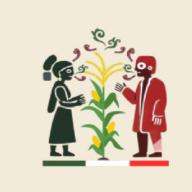
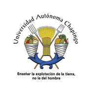

Universidad Autónoma Chapingo · Centro Académico Regional Huatusco
Recorridos de campo
Guías para celular de salidas de campo y viajes de estudio: mapa 3D, perfil altitudinal, perfil agroecológico e itinerario de cada sitio. Funcionan sin internet una vez abiertas.

Recorrido SOMEXA 2026
IV Congreso Mexicano de Agroecología 2026 · Sábado 14 de noviembre de 2026
Mata de Zarza · Hato de la Higuera · El Coyol · Paso Pimienta
Viaje Generacional de Estudios · Grupo 21
Viaje de Estudio Integrador I · Propedéutico · 26 de noviembre al 4 de diciembre de 2026
Veracruz · Puebla · Tlaxcala · Estado de México · Ciudad de México